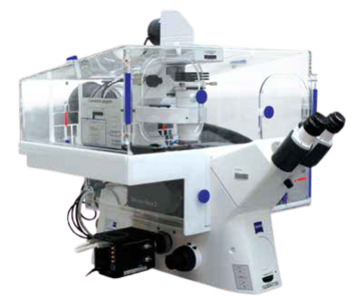

Carl Zeiss Axio observer 7 is
a motorised inverted epifluorescence microscope featuring a fast
and sensitive sCMOS camera and a colour camera for
transmitted light imaging. Motorised stage allows multi-position
time-lapse imaging or tile scans of large samples; hardware
autofocus ensures continuously stable focusing throughout
time-lapse acquisition of arbitrary duration. The microscope is housed
in a heated enclosure with CO2 control.
Available
techniques:
- Transmitted light imaging (brightfield, Phase contrast, DIC)
- Widefield multi-channel fluorescence imaging with a fast and
sensitive camera
- Long-term time-lapse imaging of living cells (with hardware
autofocus and environment control)
Objectives:
- LD A-Plan 10x/0.25 dry, FWD 8.5 mm, CG 1.0 mm
- Plan Apochromat 10x/0.45 dry, FWD 2.0 mm, CG 0.17 mm (DIC)
- LD-Plan Neofluar 20x/0.4 dry, FWD 8.4 - 7.4 mm, CG 0 - 1.5 mm (Phase
contrast)
- LD-Plan Neofluar 40x/0.6 dry, FWD 3.3 - 2.5 mm, CG 0 - 1.5 mm (Phase
contrast)
- Plan Apochromat 40x/1.3 oil, FWD 0.21 mm, CG 0.17 mm (DIC)
- Plan Apochromat 63x/1.4 oil, FWD 0.19 mm, CG 0.17 mm (DIC)
[FWD = free working distance, CG = cover glass]
Fluorescence
excitation sources:
- Colibri 7 LED lamp (excitation filters: 385/30; 423/44; 469/38;
511/44; 555/30; 590/27; 631/33)
Filter sets:
- Quad-band cube (QBS 405 + 493 + 575 + 653; QBP
425/30+514/30+592/25+709/100)
- BFP (390/40; 420 LP; 450/40)
- GFP (470/40; 495 LP; 525/50)
- DsRed (545/25; 570 LP; 605/70)
Detectors and
cameras:
- Hamamatsu Orca Flash 4.0 V2 sCMOS (2048x2048 pixels, 6.5 µm/pixel)
- Axiocam 105 color (2560x1920 pixels, 2.2 µm/pixel, 0.5x C-mount
adapter)
Software:
Other features:
- Heated enclosure with CO2 atmosphere control
- Motorised stage
- Motorised filter turret
- Motorised focus drive
- Definite Focus.2 hardware autofocus
| Usage fees [SGD/hour] |
LKCMed |
NTU |
Others |
| 5* |
20 |
30 |
| Location |
CSB 11-02T-01 |
| Contact |
nobic.facilities@e.ntu.edu.sg |
*Reduced rates apply:
- off-peak hours (weekends, public holidays and 18.00
- 8.30 on weekdays): 70% of the rate stated in the
table
- 30% of the prevailing rate applicable after
10 hours of booking/usage
- 30% of the prevailing rate (that is already the
discounted rate in this case) applicable after 24 hours
of booking/usage.
BACK TO TOP